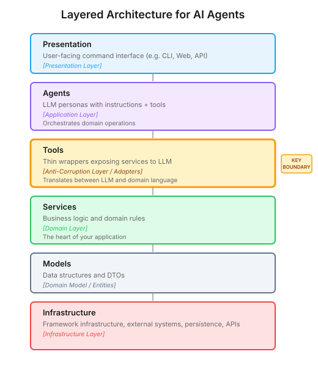

Architectural Discipline in the Age of AI
Why the conventional wisdom needs updating for a new kind of component
Everyone’s talking about AI agents. Not nearly enough people are talking about how to architect them.
Yet as AI reshapes how we write software, architectural discipline matters more now - not less. It’s the shared language that makes human-AI collaboration effective.
Multi-agent frameworks are multiplying. AI coding tools like Claude Code and GitHub Copilot are changing how we code. People are going from idea to prototype faster than ever. In all this speed and excitement, architectural thinking isn’t always part of the conversation. It almost seems old, dusty - a product of another time. After all, won’t AI just generate an architecture?
I’ve tested this. I’ve vibe-coded projects, letting AI lead without much structural guidance. For anything non-trivial, it turns into a mess. Not because the AI is bad - the code often works - but I can’t reason about it. I struggle to debug it, extend it, or explain it to the next person. I didn’t write most of it, and there’s no shared vocabulary to anchor my understanding.
When I start differently - with clear architectural boundaries, specific terminology in my prompts, perhaps a design document the agent can reference - the results change dramatically. The AI agents understand what I’m trying to achieve. They propose implementations that fit the structure. I can reason about the code they produce. I get speed and comprehension.
But I don’t think we can simply dust off the old patterns and apply them unchanged. AI is a genuinely new kind of component - semantic and non-deterministic in ways our traditional architectures didn’t anticipate. The conventional wisdom needs revisiting.
Where Does AI Fit?
When you look at established patterns like Domain-Driven Design and Clean Architecture, it isn’t immediately obvious where AI belongs. It’s not infrastructure in the traditional sense. It’s not business logic. It’s something new.
The insight that unlocked things for me was recognising that when an agent “calls a tool”, two distinct things are happening:
The natural language boundary - accepting simple parameters, returning strings the AI can reason about
The actual work - searching APIs, processing data, handling errors, returning rich objects
These are different concerns. Language models need simple strings. Your application needs proper abstractions. Conflating them creates the same problems we’ve always had when we blur architectural boundaries; it just happens faster now because AI generates code faster than we can review it.
The update to conventional wisdom: treat the natural language boundary as an anti-corruption layer. In Domain-Driven Design, an anti-corruption layer is a translation boundary that protects your domain from external system concerns. Here, it protects your business logic from the AI’s interface requirements - the simple strings, the prompt formatting, the way agents need information presented. Keep that layer thin. Let your actual business logic live in proper services underneath, ignorant of whether they’re being called by an AI or anything else.
This maps naturally to a layered architecture:

The tools layer is where the natural language boundary lives. It accepts strings, calls services, and formats results for the agent. The services layer is where complexity lives - configuration, error handling, retries, typed returns. Crucially, services are reusable independently of AI.
This separation isn’t novel. It’s applying what we’ve known for decades about boundaries and responsibilities. But it requires thinking carefully about where those boundaries belong when AI is part of the picture.
The Test: Can You Swap Coordination Patterns?
Architecture is easy to talk about in the abstract. The real test is whether it holds up when requirements change.
With this layered structure in place, I explored three different coordination patterns for multi-agent systems1:
The Orchestrator Pattern: A central coordinator directs specialised agents. Simple, conversational, well-understood. Good for interactive applications where context accumulates naturally.
The Goal-Aware Pattern: Remove the central coordinator. Every agent understands the user’s goal and reasons about what should happen next. More complex, but enables adaptive workflows and natural parallelism.
The Planner Pattern: Decide everything upfront with a single planning step, then execute mechanically. Trades adaptability for predictability and cost control. Good for batch processing and compliance scenarios.
Three different patterns. Different trade-offs. Different use cases.
But here’s what mattered: the business logic stayed the same. The services that call APIs, process data, and implement domain rules didn’t change. Only the coordination layer changed - how agents were organised and how they handed off work to each other.
The first time I swapped from an orchestrator to goal-aware agents and my services didn’t need a single change, I knew the boundaries were right.
This is the test of good architecture. Not whether it looks elegant in a diagram, but whether you can change one dimension without rewriting everything else. When the boundaries are right, the system is flexible.
Why This Matters More Now
For technical leaders, I think the implication is this: don’t let your teams abandon architectural thinking because AI makes building fast.
The speed is real. But without shared structure, you’re accumulating comprehension debt - code that works but that nobody truly understands. When your engineers can’t reason about the codebase, neither can the AI tools they’re using to extend it. The mess compounds.
The investment in architecture pays off differently now. A design document isn’t just for onboarding humans - it’s context that makes AI collaboration effective. Consistent patterns aren’t just about code style - they’re what allows AI tools to make sensible suggestions. Clear boundaries aren’t just for testability - they’re what keeps AI-generated code from tangling into something nobody can debug.
Architecture has become the shared language between humans and AI. Without it, you get speed but lose comprehension. With it, you get both.
The Opportunity
I don’t think we’ve fully worked out best practices for this era. The frameworks are still proliferating. The patterns are still emerging. Most organisations are still exploring.
That’s an opportunity. There’s real value in revisiting conventional wisdom - not to discard it, but to update it. To figure out where the new components fit. To adapt what we know for a world where AI is part of the development process, not just the product.
The tools are new. The discipline isn’t. And it matters more now than ever.
Footnotes
For a deeper dive into each pattern, see my technical series: Architecting Multi-Agent Systems: Evolving Proven Patterns to Agentic Systems, From Orchestrator to Goal-Aware: What Happens When Every Agent Thinks, and Planning Multi-Agent Workflows: Trading Adaptability for Predictability.↩︎